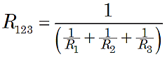
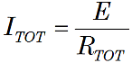
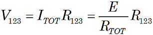
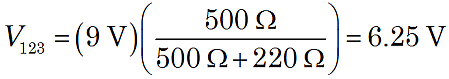
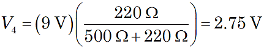
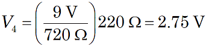

Calculating Voltage in Series-Parallel Circuits
 Figure 1. Series-parallel resistors. |
In circuits that have resistors connected in both series and parallel, consider the circuit as combinations of parallel parts and series parts.
Use the series and parallel resistance formulas to determine the total resistances of the parts. Then, use Ohm's Law to calculate the voltage drops across each part.
For example, in the circuit of Figure 1, first use the formula for parallel resistors to find the equivalent resistance R123.

As shown in Figure 1, the circuit is equivalent to resistance R123 in series with R4, so RTOT = R123 + R4, and Ohm's Law gives the total current for this circuit:

The voltage drop across the parallel part of the circuit is:

and across the series resistor:

An Example
For example, suppose the circuit in Figure 1 has E = 9 V, R1 = R2 = R3 = 1.5 kΩ, and R4 = 220 Ω. Then R123 = 500 Ω and RTOT = 720 Ω, so

and

Note: It is important to carefully handle units with metric prefixes. Above, we used values so that our formula for current yielded volts/ohms = amperes. With careful attention to the prefixes and decimal points, some folks can use shortcuts like volts/kilohms = milliamperes, millivolts /ohms = millivolts, and so forth.